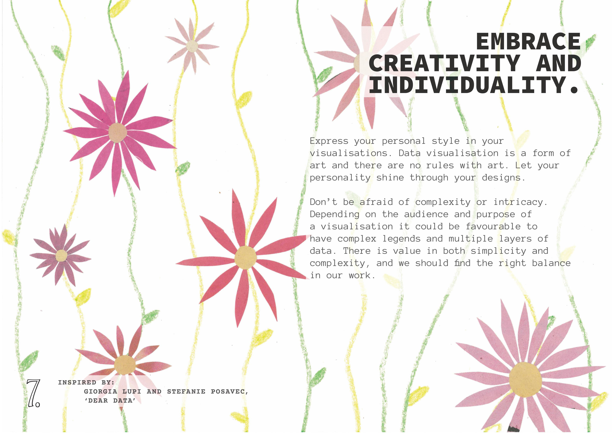
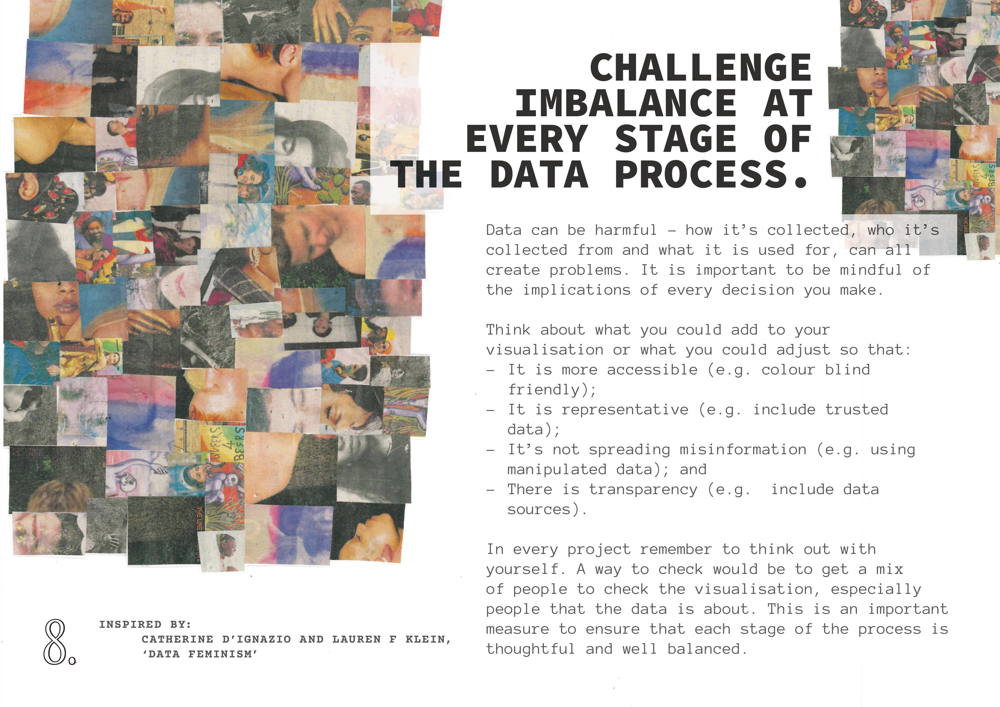
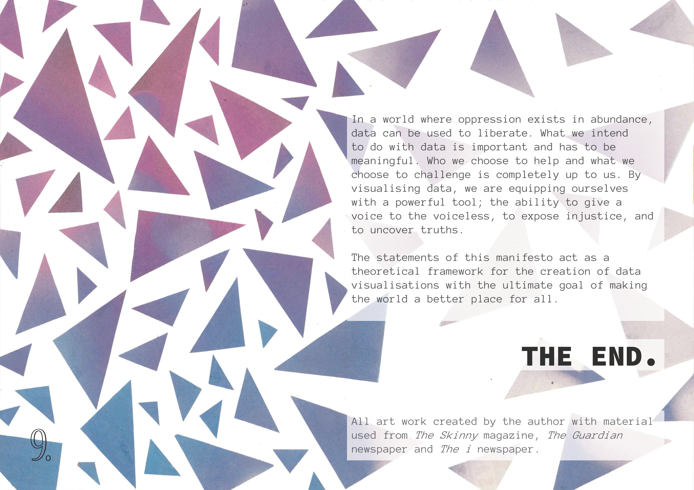
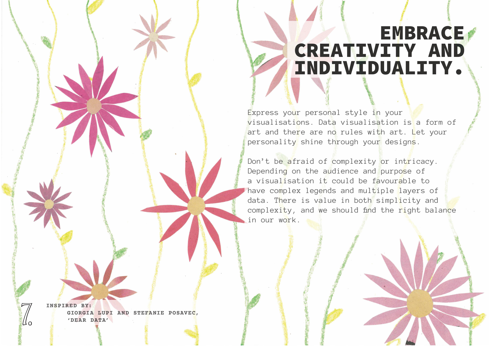
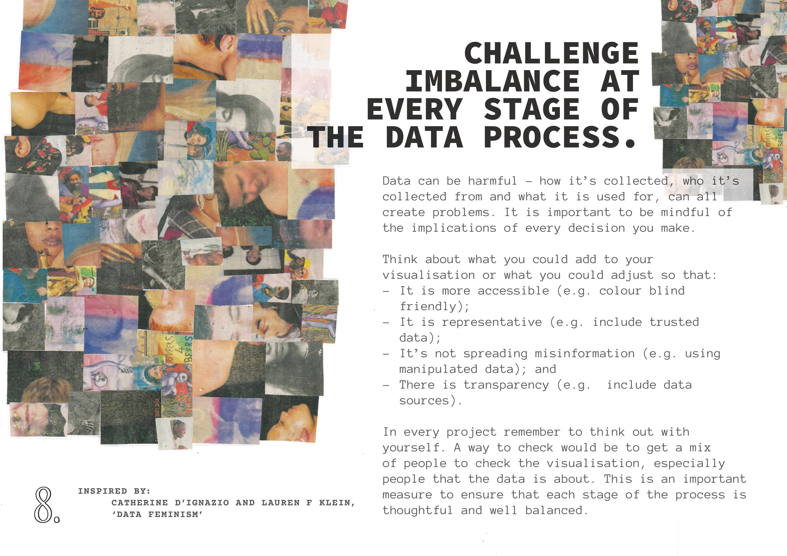
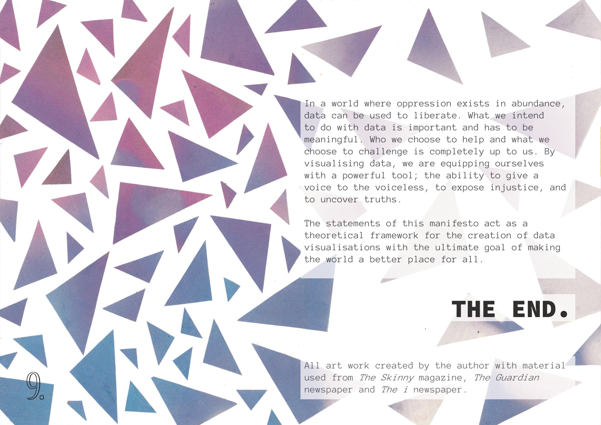

The aim: To produce a ‘design manifesto’ that describes/explains/states my approach to data visualisation and my relationship with methods, concepts and/or values that are important to my practice.
 





I the idea to create a collage, collecting magazine and newspaper cut-outs that compliment the points and inspiration of my manifesto. This hand-made aspect adds a deeper layer of personalisation that is further reflected in the theme of the project. Just as a collage is a patchwork of styles so too is my manifesto, taking insights from my most influential data professionals and aranging it togther to create my personal manifesto.
Finally, the idea of liberation emerged when reflecting on the purpose of data design and how I want my work to impact others. This direction brings everything together, connecting my past inspirations with the vision guiding my future aspirations.
The collage pages were scanned into In-Design and the text was added in, along with the other finishing touches.